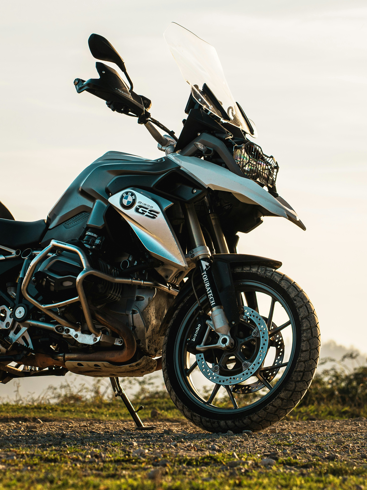
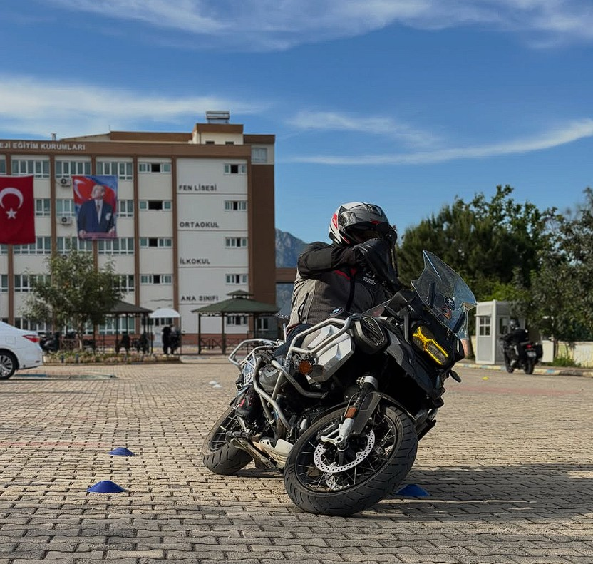

Motosiklet Sürüşünü Profesyonel Seviyeye Taşıyın
Jandarma motosiklet timleri eğitmen eğiticisi olarak edinilen tecrübe, yollarda daha güvenli ve ileri sürüş tekniklerine hâkim olunabilmesi için profesyonel eğitim paketleri halinde sunulmaktadır. Hata payını sıfıra indirmek için doğru teknikleri refleks haline getirin.
Eğitimleri İncele

Güvenli ve İleri Sürüş Kültürü ile Risk Yönetimi
Motosiklet sürüşü sadece mekanik bir beceri değil, dinamik bir risk yönetimidir. Eğitimlerin temel odağı; sürücünün trafikteki tehlikeleri henüz oluşmadan öngörmesini sağlamak, viraj çizgilerini emniyet kurallarına göre optimize etmek ve panik anında doğru fren/kaçış reaksiyonlarını milisaniyeler içinde üretebilmesini amaçlamaktadır.
10.000+
Mezun Kursiyer
20+ Yıl
Saha ve Eğitmenlik Tecrübesi
%100
Güvenli ve İleri Sürüş Odaklılık
Eğitim Metodolojisi
Teorik Altyapı
Sürüş mekanikleri ve trafikte hayatta kalma stratejileri teorik olarak çözümlenir.
Kapalı Alan Eğitimi
Kapalı alan güvenliğinde, düşük hız dengesi ve kaçış refleksleri refleks haline getirilir.
Trafik Adaptasyonu
Gerçek yol koşullarında, eğitmen gözetimi ve telsiz bağlantısı eşliğinde sürüş tamamlanır.